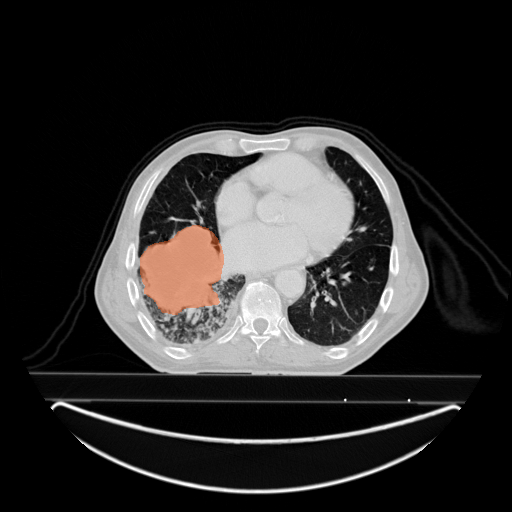
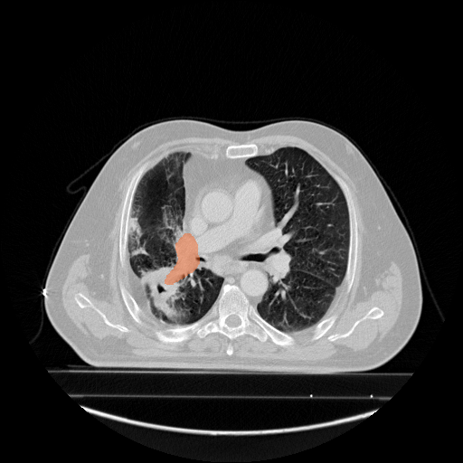

LUNG1-002
96th percentile155 days
2 patients. One completed run.
The model got this pair’s order backward.
Both patients were in the higher-score group.
Percentiles compare scores with the patients the model learned from.
We compare these two patients with each other. Higher scores predict earlier deaths. Here, the higher-ranked patient died later. Two patients are too few to judge the model overall.
C-index 0.000. Two recorded deaths.
Higher-ranked patients tended to die sooner.
C-index 0.606. The 95% confidence interval is 0.533 to 0.674. These patients were reserved before model development.


Both scans passed the geometry, slice-spacing, and anonymization checks. The orange overlay marks the tumor.
Shape, intensity, and texture.
| Patient | Low CT intensity | High CT intensity |
|---|---|---|
| LUNG1-002 | 0.64683153 | 1.9647864 |
| LUNG1-009 | 0.97327069 | 1.6958013 |
Preview shows two of the 72 recorded measurements.